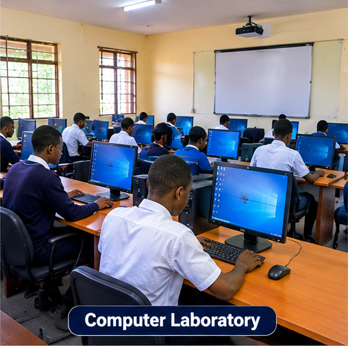
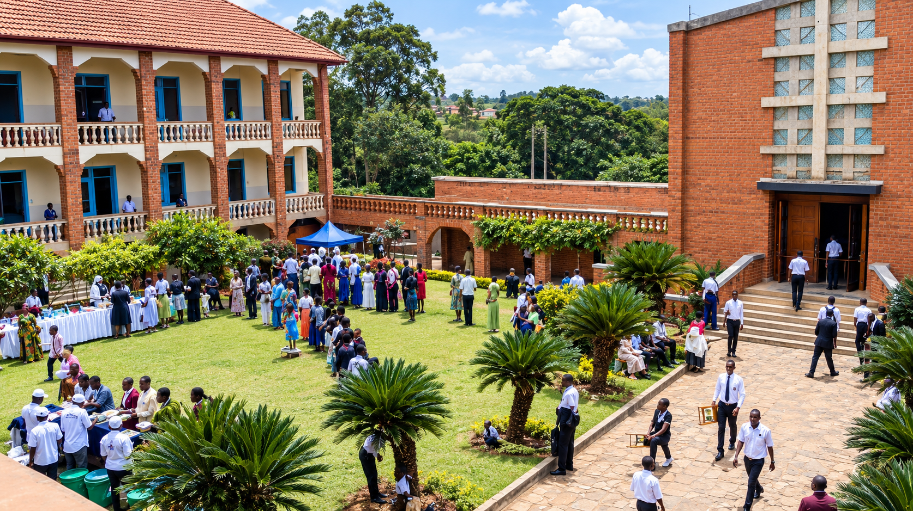

Academic Education
We encourage students to develop knowledge, critical thinking, creativity and a commitment to learning. Academic formation prepares them to pursue further education and contribute positively to society.
Kisubi Seminary is committed to the holistic formation of young men through academic learning, spiritual growth, discipline and preparation for responsible citizenship.
Learn About UsOur approach to formation seeks to develop the mind, character and spiritual life of every student.
We encourage students to develop knowledge, critical thinking, creativity and a commitment to learning. Academic formation prepares them to pursue further education and contribute positively to society.
We guide students in understanding the Catholic faith, growing in prayer and developing values such as compassion, honesty, service and respect for others.
.jpg)
We emphasize self-discipline, responsibility, teamwork and good conduct. These qualities help students become dependable leaders and responsible citizens.

Appropriate use of technology can help students develop computer skills, research abilities and digital literacy for learning and everyday life.

We promote cooperation, respect, kindness and concern for others. Students are encouraged to value community life and understand the importance of serving society.
.jpg)
Personal growth includes emotional intelligence, confidence, perseverance and healthy habits. These qualities support balanced development beyond the classroom.
Education is about more than passing examinations. It is also about developing good character and preparing for life.
A summary of the examination figures currently included in this website.
| Division | Number of Candidates |
|---|---|
| Division One | 44 |
| Division Two | 00 |
| Division Three | 00 |
| Division Four | 00 |
Note: These are the figures supplied in the original page. Confirm the examination year, candidate totals and division figures before publishing. The table does not independently establish an overall pass rate.
Through education, spiritual formation and the promotion of good character, we aim to help young men grow into responsible individuals who can make a positive contribution to their communities.
Contact Us